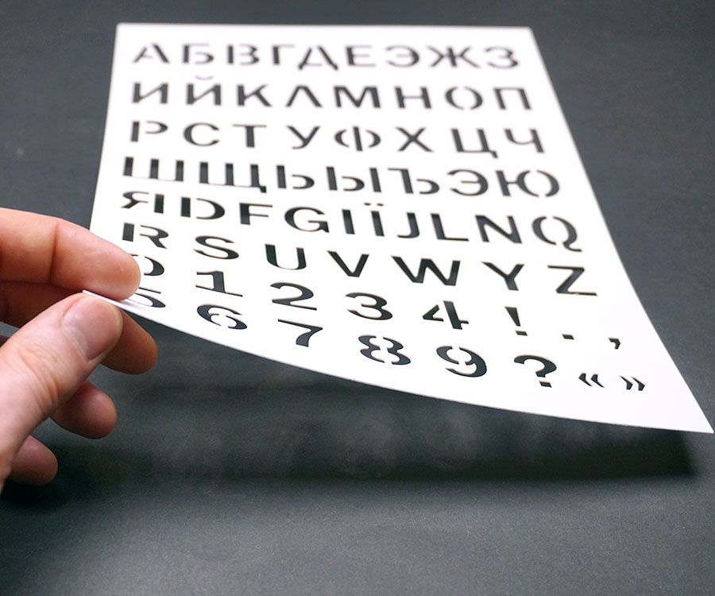
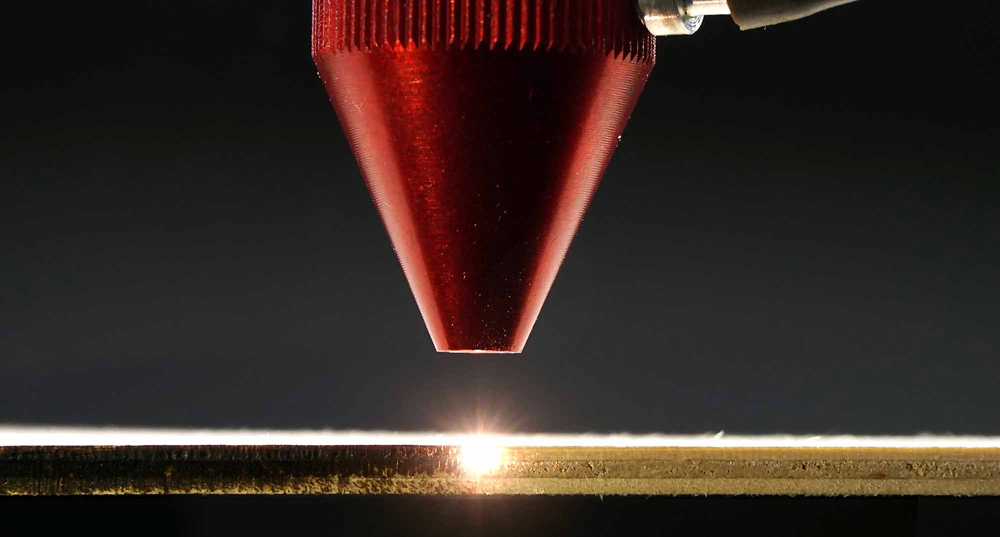
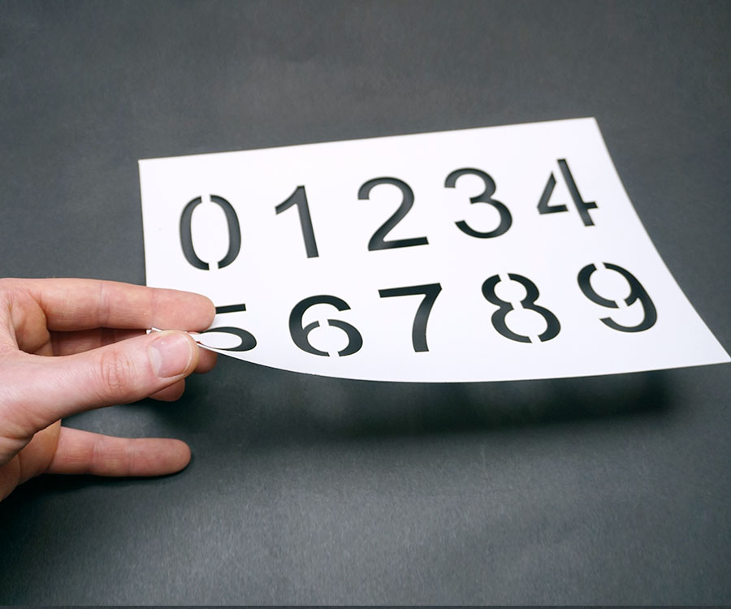

1.Как это было раньше?
 Трафареты широко применяются в различных отраслях работы, жизни и отдыха. Все мы помним прозрачные пластиковые трафареты из далекого детства, где были вырезаны буквы, цифры и знаки препинания. Тоненький пластик, прошедший вырубку на специальном оборудовании как раз таки и являлся трафаретом того времени. Многие умельцы и просто ребята, любящие сделать все сам, изготавливали трафареты собственноручно. Как правило, применяли бумагу или не сильно плотный картон. А кто-то и вовсе, делал трафареты из старых рентгеновских снимков. На что только не приходилось идти для воплощения своего уникального каприза. Вырезались трафареты специальными острыми ножиками, с использованием металлической линейки в качестве направляющей. Спустя два три часа вырезания, пальцы мастера покрывались мозолями и очень болели, а через несколько дней становильст похожими на пальцы гитариста. Знаем мы об этом не по наслышке, ведь в далеком 2009 году, когда только все начинилось, мы и сами вырезали трафареты вручную. Потом точно так же ходили с каменными пальцами.
2.Изготовление трафаретов сегодня.
На сегодняшний день мы предлагаем трафареты отличного качества, изготовленные на высокоточном оборудовании за очень короткий промежуток времени. Срок изготовления трафаретов по индивидуальным макетам составляет от нескольких часов до пары дней. А купить уже готовые наборы трафаретов цифр, букв и проч. вы можете в немедленном порядке, оформив заказ на нашем сайте.
Индивидульный заказ трафарета вы можете произвести в разделе "под заказ". Достаточно загрузить свой макет и добавить описание, в котором вы можете указать желаемый размер трафарета и какие либо дополнительные пожелания по изготовлению. Мы свяжемся с вами по указанному вами способу (Telegram, Viber, E-Mail или просто позвоним). Перед отправкой файла ознакомтесь с "требованиями к макетам".
3.Из чего трафарет?
 Материал изготавливаемого трафарета определяется задачей, под которую он производится. Более всего чаще мы производим трафареты из гибкого пластика, толщиной до 1мм. Такой пластик стойкий к почти всем краскам и растворителям. Его можно согнуть, если имеется такая необходимость. Пластик очищается от краски сразу после окончания работы с трафаретом, другими словами, краска не должная высыхать. Такое отношение позволит использовать трафарет многоразово. Пластик лучше не сворачивать. Ведь когда он ровный, значительно лучше работать - прилегание к поверхности максимально плотное.
Также мы производим трафареты из металла и фанеры. Для просчета вашего индивидульного заказа перейдите в раздел "под заказ" и заполните все необходимые формы либо свяжитесь с нами немедленным образом из раздела "контакты".
4.Как заказать трафарет?
Для покупки готового трафарета вы можете выбрать раздел, который интересует. "Цифры" или "буквы" или "прочие", затем добавить товар в корзину и оформить заказ с добавленными товарами. Либо вы можете купить нужный товар немедленно, для этого необходимо нажать кнопку "купить в 1 клик".
Для заказа трафарета по индивидуальному макету перейдите в раздел "под заказ", заполните все необходимые поля и ожидайте дальнейшей связи. А для немедленного диалога перейдите в раздел "контакты" и выберете удобный способ связи с нами.